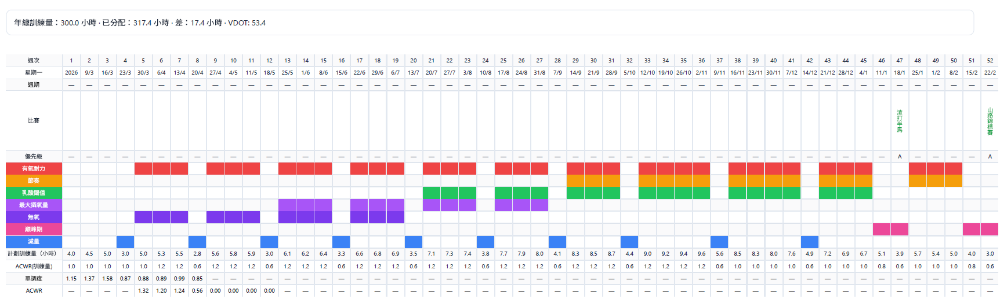

打造屬於自己的全年跑步訓練藍圖
跑步計劃不僅僅是一份比賽前幾週的課表，而應該是一個跨越全年的系統性規劃，從基礎期到賽季階段，循序漸進地提升自身能力。本文將詳細介紹，如何一步一步為自己量身打造適合的跑步計劃。只要邏輯清晰並運用合適的工具，設計一份詳細的跑步計劃其實非常簡單。
所需工具
- 手錶： 用於記錄運動時間。
- 自覺強度評分表（RPE）： 用於記錄運動強度。
- 訓練記錄表： 用於規劃跑步計劃，並在每次訓練後，依據訓練量與強度記錄數據。
設立目標賽事
在設計跑步計劃前，建議跑者根據自己的專注項目，將未來一年參加的比賽依照重要程度劃分為 A、B、C 三級：
- A級賽事（1-2場）：挑選1至2場作為主要目標。針對A級賽事，會進行完整的「建立」期、「巔峰」期，並按需要設立「過渡」期，讓身體在高強度週期後恢復。
- B級賽事（3–5場）： 不會特別備賽，只在賽前一週進行調整，比賽距離通常較短。
- C級賽事（不多於10場）： 不進行備賽和調整，將比賽視為訓練的一部分，以平時訓練強度完成。
分配訓練週期
設立目標賽事後，下一步是根據賽事分佈編排訓練週期。一般可劃分為五個階段：
- 基礎期： 持續時間最長，進入「建立」期前提升綜合體能。循序漸進增加訓練量，僅可進行 C 級比賽，避免累積訓練量被打斷。
- 減量期： 基礎期進行2-4週後，插入1週減量期讓身體恢復。訓練帶來破壞，休息才能進步。
- 建立期： 完成基礎期後，為比賽做4-8週準備。訓練量略減，強度提升，目標是提升比賽所需體能。
- 巔峰期： 比賽前的減量期，維持強度、降低訓練量，調整至最佳狀態。
- 過渡期： 高強度週期結束後的休息階段，暫無嚴格課表，可進行其他運動，促進身心放鬆。
安排訓練區間
每個比賽項目皆有需加強的體能重點：
- 5公里：最大攝氧量、無氧耐力
- 10公里：乳酸閾值、最大攝氧量
- 半程馬拉松：乳酸閾值、節奏
- 馬拉松：有氧耐力、節奏
- 超級馬拉松：有氧耐力
隨比賽日期臨近，訓練應聚焦於與比賽相關的區間；距離比賽較遠時，則可著重提升綜合體能。
如何制定訓練量
制定訓練量時，建議引用「急性慢性負荷比（ACWR）」的概念：即當前1週訓練負荷與過去4週訓練負荷平均值的比例。
ACWR = 當前1週訓練負荷／4週訓練負荷平均值
當比率介於0.8–1.3之間，屬於有效訓練區域；若超過1.5，則需警惕過度訓練。可參考不同週期的建議比率：
- 基礎期：1.1–1.4
- 建立期：1–1.1
- 減量期：0.8–0.5
- 巔峰期：0.8–0.6
- 過渡期：0.8–0.5
週期化跑步計劃的完成
完成以上步驟後，便擁有一份完整且週期化的年度跑步計劃。依此規劃，跑者可以根據個人需求，安排每週甚至每天的課表，而不必盲目跟從網絡上的通用課表。
想要科學化調控你的訓練量？
我們的 訓練調控工具 可以自動幫你計算每週的 ACWR，讓你遠離受傷風險，跑得更長久。